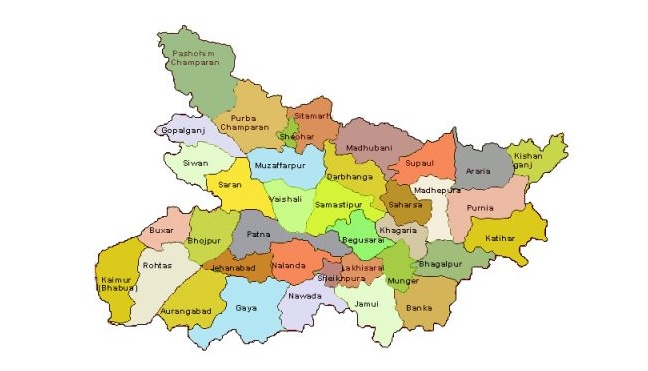

Bihar Legislative Assemble Election 2025
Comprehensive Analysis and Predictions
Party-wise Prediction Analysis
Predicted seat distribution for major political parties in Bihar General Election 2025.
| S.No. | Party Name | Estimated Seats Prediction | Estimated Plus Minus |
|---|---|---|---|
| 1 | BJP | 125 | ±8 |
| 2 | JDU | 48 | ±5 |
| 3 | RJD | 52 | ±6 |
| 4 | Congress | 18 | ±3 |
| 5 | Others | 0 | ±2 |
| Total | 243 |
Predicted Seat Distribution
BJP (125 - 51%)
JDU (48 - 20%)
RJD (52 - 21%)
Congress (18 - 7%)
Others (0 - 1%)
Bihar Electoral Map

Constituency-wise Survey Report
Comprehensive constituency-wise survey data for Bihar General Election 2025.
| S.No. | District | Constituency | Winning Party/Alliance | Expected Votes | Runner Up Party/Alliance | Expected Votes | Winning Margin | Error Margin ±5000 votes |
|---|---|---|---|---|---|---|---|---|
| Loading constituency data... | ||||||||